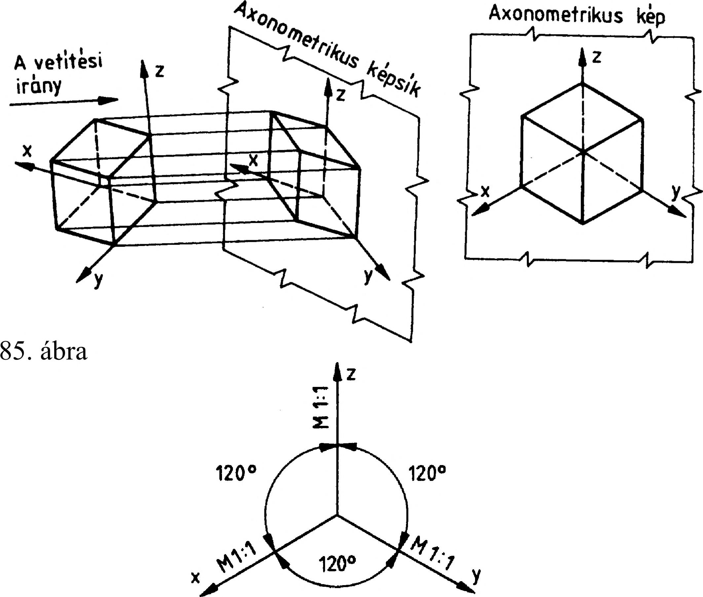

4. Axonometrikus ábrázolás 4. Axonometrikus ábrázolás A gépalkatrészeket a vetületi rajzkészítés szabályai szerint ábrázoljuk, mégpedig olyan vetítési rendszerben, amelyben a képsík párhuzamos a tárgy valamely oldalával. A nézetrend szerinti vetületek értelmezése rajzolási és rajzolvasási gyakorlatot kíván. Beállítható a tárgy úgy is, hogy oldalai a képsíkhoz viszonyítva ferdén helyezkedjenek el. Az így készített vetületen minden torz ugyan, de szemléletesebb képet kapunk. Az axonometrikus ábrázolás olyan módszer, amellyel a térbeli alakzatról szemléltető , térhatású képet tudunk szerkeszteni. A szemléltető képet egy térbeli derékszögű tengelyrendszer felvételével állítjuk elő (85. ábra). A térbeli derékszögű tengelyrendszer helyzetétől függően van egyméretű, kétméretű és frontális axonometria. 4.1. Az axonometrikus ábrázolás fajtái 4.1.1. Az egyméretű (izometrikus) axonometria Az egyméretű vagy izometrikus axonometriában a tengelykereszt x, y és z tengelyének egymással bezárt szöge 120°. A z tengely függőleges , így az x és az y tengely a vízszinteshez képest 30°-os szöget zár be. Az ábrázolni kívánt forma méreteit mindhárom irányban teljes nagyságban kell felmérni (86. ábra). 4.1.2. A kétméretű (dimetrikus) axonometria A kétméretű vagy dimetrikus axonometriában a z tengelyt megtartjuk függőlegesnek, a vízszintes tengelyirányokat pedig 1:8 és 7:8 arányú lejtéssel rajzoljuk meg. így az x tengelyt 97°ra, az y tengelyt pedig 131°30’ -re rajzoljuk a függőleges z tengelytől. Az x és a z tengelyekre a hosszméreteknek megfelelő méreteket, míg az y tengely irányában csak a méret felét kell felmérni. A tengelyrendszert szögmérő nélkül is meg lehet szerkeszteni, tetszőleges hosszegység felvételével a 87. ábra szerint. A kétméretű axonometrikus kép a valóságot legjobban megközelítő általános képet ad, de a tengelyek kirajzolása megnehezíti a szerkesztést és a rajzi kivitelezést. A 88. ábra a kétméretű axonometria jobbos és balos tengelyrendszerét mutatja. 4.1.3. A frontális (kavalier) axonometria A frontális vagy kavalier axonometriában a z tengely függőleges helyzetű. Az x tengely a z tengelyre merőleges, és mindkét tengelyre a méreteket valódi nagyságban rajzoljuk. Az y tengelyt a vízszinteshez képest 45°-os lejtéssel rajzoljuk, és a méreteket 1:2 arányú rövidüléssel mérjük fel. A 89. ábra a frontális axonometria tengelyrendszerét mutatja. Ez a tengelyrendszer is megrajzolható jobbos és balos változatban (90. ábra). A frontális axonometria nagy előnye, hogy tengelyei könnyebben megrajzolhatók, mint a kétméretű axonometria tengelyei. Az x-z síkban az elölnézeti kép torzulás nélkül rajzolható, ami főleg az elölnézetben szereplő kör ábrázolását könnyíti meg. 88 ábra Balos tengelyrendszer Jobbos tengelyrendszer 90. ábra 23
